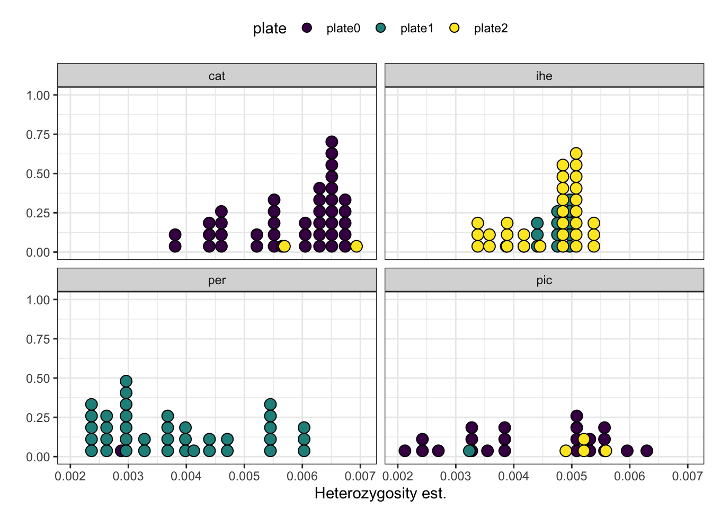
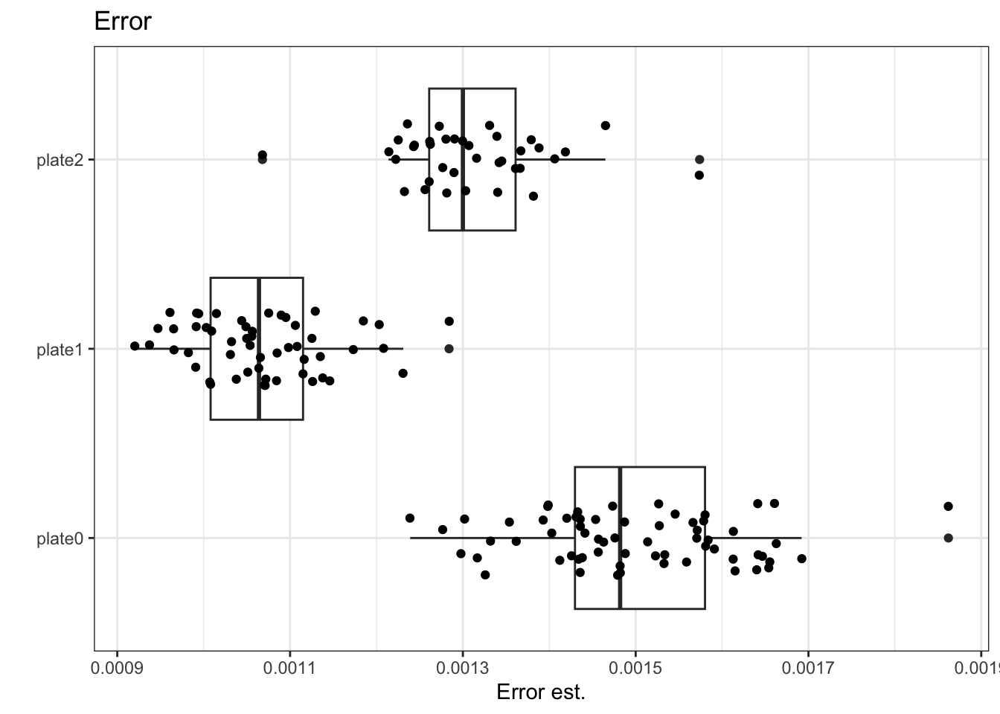
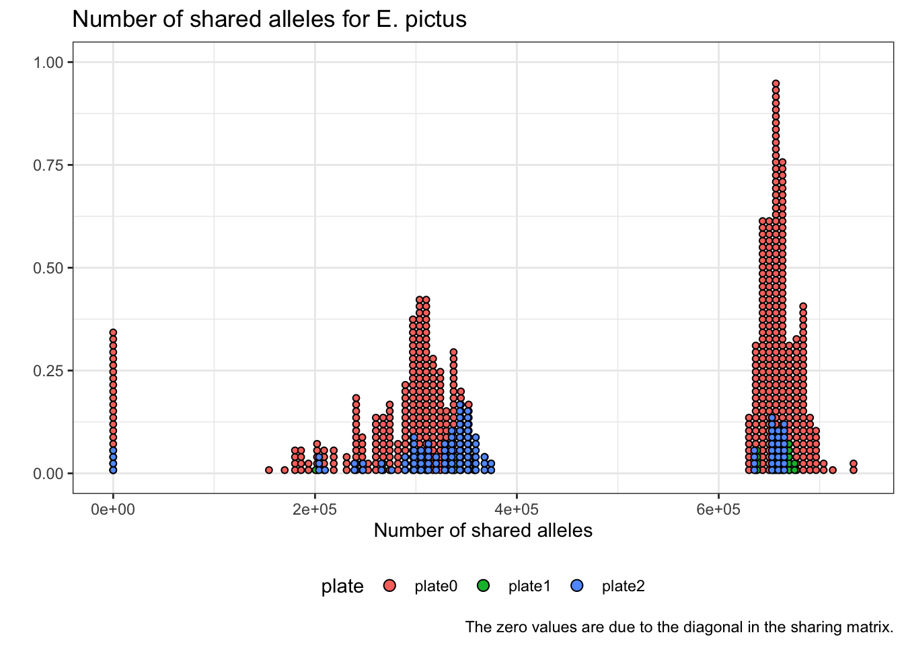
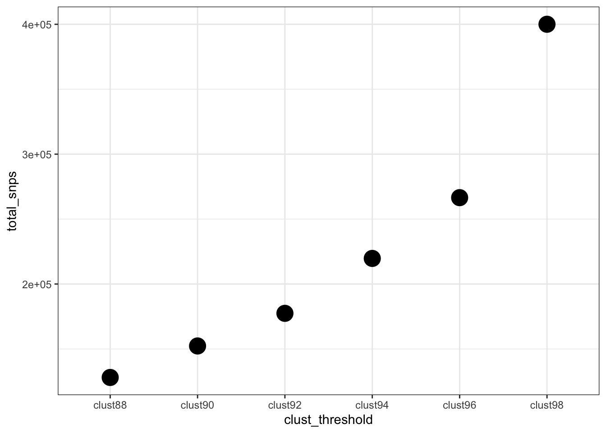

This report outlines quality control (QC) assessments performed on Enyaliusipyrad assemblies, with a focus on assessing the presence of batch effects and determining the appropriate clustering threshold.
For the batch effect analysis, I’m arbitrarily using the cluster threshold of 0.94. These values may vary a little bit from the optimal clustering threshold to be determined, but shouldn’t impact any conclusions. I am considering clustering thresholds of 0.90, 0.92, 0.94, 0.96, and 0.98.
Also, as a sanity check, the error rate should be on the order of 0.001 and heterozygosity should be on the order of 0.01.
Decision
Based on all quality control assessments, I’ve determined that batch effects are not significant, although there is some variation in heterozygosity across sequencing plates, and a cluster threshold of 0.92 is the most appropriate across species. See below for more specific interpretations of the results.
Code
library(here)library(tidyverse)library(sf)library(patchwork)source(here("assembly", "scripts", "read_ipyrad_stats.R"))source(here("assembly", "scripts", "plot_ipyrad_pca.R"))source(here("assembly", "scripts", "share_to_vec.R"))source(here("assembly", "scripts", "calc_gendist.R"))# shorthand for parsing list param inputs, where x is the param call, e.g. x = params$thresh# only necessary for params with multiple inputsparse_params <-function(x) { x <-str_split_1(x, " ")return(x) }locs <-read_csv(params$locs)# cluster thresholds clust_thresh <-paste0("clust", parse_params(params$thresh))
The Enyalius individuals were sequenced across multiple plates, which can result in non-biological variation among samples due to library prep and sequencing artifacts. Here, I’m visualizing heterozygosity, missingness, and genetic structure (PCA) patterns across sequencing plates and species.
To determine the impact of batch effects, I am:
plotting heterozygosity per plate, per species
examining missingness per plate, per species
including a visualization of a PCA that includes the plate number per species
Code
ip_stats_94 <-read_ipyrad_stats(params$ip_stats_94)locs_stats_94 <-left_join( ip_stats_94, locs,by ="id_code") %>%# remove and rename duplicate columnsselect(-ends_with(".y")) %>%rename_with(~str_remove(.x, ".x"), ends_with(".x")) %>%# there are two concatenated samples that don't have plate info# don't want outgroupsfilter(!is.na(plate), species %in%c("cat", "ihe", "per"))
Heterozygosity varies across plates, but species mostly correspond with a single plate. For species sequenced across multiple plates, there doesn’t appear to be plate effects.
Error varies across plates in general and within species. I’ll need to consider this for future analyses and may be able to account for it bioinformatically.
locs_stats_94 %>%ggplot(aes(x = hetero_est, y = plate)) +geom_boxplot() +geom_jitter(height =0.2) +scale_color_viridis_d() +labs(y ="", x ="Heterozygosity est.",title ="Heterozygosity") +theme_bw()locs_stats_94 %>%ggplot(aes(x = hetero_est, fill = plate)) +geom_dotplot(binwidth =0.0002) +scale_fill_viridis_d() +labs(y ="", x ="Heterozygosity est.") +facet_wrap(~species) +theme_bw() +theme(legend.position ="top")
Code
Code

locs_stats_94 %>%ggplot(aes(x = error_est, y = plate)) +geom_boxplot() +geom_jitter(height =0.2) +scale_color_viridis_d() +labs(y ="", x ="Error est.",title ="Error") +theme_bw()locs_stats_94 %>%ggplot(aes(x = error_est, fill = plate)) +geom_dotplot(binwidth =3e-5) +scale_fill_viridis_d() +labs(y ="", x ="Error est.") +facet_wrap(~species) +theme_bw() +theme(legend.position ="top")
Code

Code
I’m using ipyrad to calculate allele sharing among samples and visualize as a heat map. Alleles should be shared most within species and shouldn’t be structured by plate number.
In the first iteration, there are a couple outlier individuals (per_bana_CTMZ03943 and cat_cam_PEU322). These individuals also had a low number of reads and recovered loci. I have multiple individuals from each locality, so I’m getting rid of them for future analyses.
There appears to be some within-species variation, but it’s not due to a batch effect.
Code
locs_sdf_94 <-left_join( sdf %>%rename(id_code = sample), locs,by ="id_code")miss_cat <- locs_sdf_94 %>%filter(species =="catenatus") %>%select(starts_with("cat"), plate) %>%pivot_longer(starts_with("cat"), names_to ="sample", values_to ="num_shared") %>%ggplot(aes(x = num_shared, fill = plate)) +geom_dotplot(binwidth =6500) +labs(x ="Number of shared alleles",y ="",title ="Number of shared alleles for E. catenatus",caption ="The zero values are due to the diagonal in the sharing matrix.") +theme_bw() +theme(legend.position ="bottom")miss_ihe <- locs_sdf_94 %>%filter(species =="iheringii") %>%select(starts_with("ihe"), plate) %>%pivot_longer(starts_with("ihe"), names_to ="sample", values_to ="num_shared") %>%ggplot(aes(x = num_shared, fill = plate)) +geom_dotplot(binwidth =3000) +labs(x ="Number of shared alleles",y ="",title ="Number of shared alleles for E. iheringii",caption ="The zero values are due to the diagonal in the sharing matrix.") +theme_bw() +theme(legend.position ="bottom")miss_per <- locs_sdf_94 %>%filter(species =="perditus") %>%select(starts_with("per"), plate) %>%pivot_longer(starts_with("per"), names_to ="sample", values_to ="num_shared") %>%ggplot(aes(x = num_shared, fill = plate)) +geom_dotplot(binwidth =6500) +labs(x ="Number of shared alleles",y ="",title ="Number of shared alleles for E. perditus",caption ="The zero values are due to the diagonal in the sharing matrix.") +theme_bw() +theme(legend.position ="bottom")miss_cat

Code
miss_ihe
Code
miss_per
I’m using ipyrad (@eaton2020) to conduct per-species PCAs. I’m looking for outliers according to their plate.
I’m using a minimum coverage of 50% per locus to minimize the effect of missing data and subsampling a single SNP per locus to reduce physical linkage. NA plate numbers indicate a few individuals who had to have their FASTAs concatenated due to a data transfer error.
Based on the first four PC axes, there is no bias in genetic diversity by plate number.
Code
pca_batch_paths <-parse_params(params$pca_batch_paths)# read in the files. the first column is row numbers, which need to be removedpca_batch_list <-map(pca_batch_paths, \(x) read_csv(x) %>%select(-1))# rename for more explicit accessionnames(pca_batch_list) <-map_chr(pca_batch_paths, \(x) basename(x) %>%str_remove(".csv") %>%str_remove("pcs_"))# make a big dataframe for easy filteringpca_batch_df <-bind_rows(pca_batch_list, .id ="name")
To determine the appropriate clustering threshold, I am following @mccartney-melstad2019’s workflow, which includes the following steps:
Genetic diversity (heterozygosity ~ number of SNPs recovered)
Cumulative variance explained by major principal components
Relationship between missingness and genetic divergence
Slope of isolation by distance
Note, ipyrad (@eaton2020) no longer outputs paralog flags, so I am not performing the original first step, visualizing the fraction of inferred paralogs. In addition, phylogenetic signal did not do a great job of discriminating among clusters, so I am not going to use it here.
When clustering thresholds are too low, paralogs get clumped together. This leads to higher genetic diversity. McCartney-Melstad et al. assume that bioinformatic filters remove paralogous loci by flagging them, but ipyrad doesn’t do this, apart from the max_alleles_consens filter. So, clustering thresholds that are too low lead to higher inferred genetic diversity/heterozygosity. This should also lead to higher numbers of total SNPs. Therefore, an optimal clustering threshold should lead to lower heterozygosity and maximal numbers of SNPs.
Results: I’m seeing a sharper decrease in heterozygosity after clust_thresh = 0.92, while SNP counts increase steadily. Additionally, a clust_thresh of 0.88 leads to outliers in heterozygosity. Based on this metric, I think a clust_thresh of 0.90 or 0.92 is appropriate.
total_snps %>%ggplot(aes(x = clust_threshold, y = total_snps)) +geom_point(size =6) +theme_bw()

When true orthologues are oversplit, there should be a reduction in the divergence of the most different groups, leading to a decrease in the variance accounted for in the first few principal components.
I decided to use the first eight principal components due to likely strong population structure within species and find that, in general, variance explained decreases with clustering threshold. There is no increase prior to the decrease, also indicating that I’m exploring cluster thresholds that are too high. Performing single-species assemblies could also solve this, but I want comparable diversity values across species and conducting different assemblies for each species may introduce non-biological biases in diversity metrics across species that I don’t want.
Results: Although there is some variation among species, as a whole the cumulative variance explained is steady up until a 0.92 clustering threshold, where it sharply decreasing afterwards, indicating a clustering threshold of 0.92 or lower is preferable according to this metric.
Code
# only want ingroup species.locs_ingroup <- locs %>%filter(species %in%parse_params(params$inlong))# read in pc variancespca_var_paths <-parse_params(params$clust_var_paths)# read in the files. the first column is row numbers, which need to be removedpca_var_list <-map(pca_var_paths, \(x) read_csv(x) %>%select(-1))# rename for more explicit accessionnames(pca_var_list) <-map_chr(pca_var_paths, \(x) basename(x) %>%str_remove(".csv") %>%str_remove("var_"))# make a big dataframe for easy filteringpca_var_df <-bind_rows(pca_var_list, .id ="name")
I’m splitting the PCAs by species and evaluating the clusters per-species.
`summarise()` has grouped output by 'name'. You can override using the
`.groups` argument.
Code
pca_cumvar_all
Over-splitting homologous loci into multiple loci is most likely to occur in genetically divergent individuals, leading to an increase in missingness when the locus is improperly split. Therefore, I expect the correlation to increase between genetic diversity and missingness when loci are being over-split.
I’m counting the number of shared loci between individual pairs using Sharing from the ipyrad.analysis module (performed in an earlier step of the Snakemake pipeline). So, this will result in the opposite relationship with genetic diversity, compared with missingness (negative rather than positive).
I’m estimating the pairwise genetic distance among individuals by calculating the Euclidean distance of PC-space between individuals, sensu @shirk2017. I’m using the PCAs conducted in the previous section and selecting the first 20 PCs as the information contained drops considerably after this. Additionally, to simplify comparisons, I’m only considering the matrices that contain individuals from all ingroup species.
Results: The correlation between missingness and genetic distance varies, then sharply increases after a 0.92 clustering threshold. So, a threshold less than 0.94 should be okay according to this metric.
Code
share_paths <-parse_params(params$share_paths)share_list <-map(share_paths, read_csv)# allele sharing vectorsshare_vec_list <-map( share_list, \(x) share_to_vec(share_obj = x,ingroup_names = locs_ingroup$id_code ) )# genetic distance vectorspca_clust_paths <-parse_params(params$clust_pc_paths)# only retain gen dist vecs for all species matricespca_clust_paths <- pca_clust_paths[str_detect(pca_clust_paths, "all")]pca_clust_list <-map(pca_clust_paths, \(x) read_csv(x, show_col_types =FALSE))names(pca_clust_list) <-map_chr(pca_clust_paths, \(x) basename(x) %>%str_remove(".csv") %>%str_remove("pcs_"))pc_dist_list <-map(pca_clust_list, calc_gendist)
Code
dist_cor_vec <-map2_dbl(share_vec_list, pc_dist_list, cor) dist_cor_df <-tibble(clust_thresh = clust_thresh,# easier to visualize decreasing correlation with positive cor. coef.r = dist_cor_vec *-1)ggplot(dist_cor_df, aes(x = clust_thresh, y = r)) +geom_point(size =3) +labs(y ="PCC between genetic \ndistance and missingness") +theme_bw()
IBD predicts that genetic distance should increase with geographic distance within species. If orthologues are being over-split, this pattern breaks down, so the increase in genetic distance is lower than expect. So, the expected pattern is the slope of a regression (lm) to remain stable until the clustering threshold where over-splitting results in a weaker relationship between genetic distance and geographic distance.
I’m using the sf::st_distance() function to calculate great circle distances rather than Euclidean distances.
Results: Slope is steady until clust92, then sharply decreases. I’d say it’s staying up until 0.92.